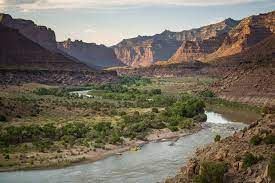

Main Fork of the Salmon River, Idaho. The Salmon is one of the longest undammed rivers in the United States.
Desolation and Gray Canyon, Utah. Desolation is rated a Class II/III and is usually done in 6 days.
Grand Canyon, Arizona. This is the original of all canyons and the granddaddy of all river trips. You will never forget your visit to the Grand Canyon.